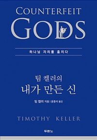

『내가 만든 신』을 함께 읽는 첫 모임. 레아와 라헬 대목을 읽고 온 소감 나눔으로 잔잔하게 시작했지만, '읽어도 변하지 않는 나'라는 고백과 해석되지 않는 사별의 고통에 대한 질문이 이어지며 모임은 이내 깊은 자리로 내려갔다. 진행자는 변화의 실적보다 앞선 하나님의 사랑, 고통 앞에서 아무 말도 하지 않는 지혜, 정경화 과정과 성경의 권위까지 질문마다 정면으로 마주 앉았다. 직접 만든 정리 자료를 나누고 다음에 읽을 책을 예고한 뒤, 한 해의 풀린 기도와 풀리지 않은 기도를 모두 하나님의 손에 맡기는 기도로 모임을 닫았다.
레아와 라헬 — 복의 기준이 뒤집히다
모임은 그 주에 읽은 레아와 라헬 이야기의 나눔으로 문을 열었다. 한 참석자는 배우자의 사랑을 바라보고 살던 레아가 결국 야곱이 아니라 하나님을 바라보게 되는 과정에 마음이 머물렀다며, 돈이라는 우상이 하나님으로 대체되자 돈이 제자리로 돌아와 사람을 섬기는 도구가 되었다는 책의 대목을 남기고 싶은 문장으로 적었다고 했다.
다른 참석자는 남편의 사랑을 얻지 못한 채 출산으로 인정받으려 했던 레아의 세월이 얼마나 길고 고단했을까 헤아리며, 누구에게나 그런 고난을 통해 당신을 알아가게 하시는 하나님의 공평하심을 보았다고 했다. 진행자는 우리 눈길이 자연스레 라헬에게 가지만 하나님의 관점은 다르다는 점을 짚으며 첫 나눔을 정리했다.
변하지 않는 나보다 큰 사랑 — 하나님의 맷돌
한 참석자가 책을 읽어도 삶이 바뀌는 게 없는 것 같다고 솔직하게 털어놓자, 진행자는 오히려 그 고백을 하나님이 가장 기뻐하셨을지 모른다고 받았다. 그러고는 형편이 나아지자 마음이 형편을 따라 흔들리더라는 자신의 부끄러운 근황을 먼저 내려놓았다. 그 고민이 드는 것 자체가 성령이 내 안에 계신 증거이며, 우리는 변화의 실적으로가 아니라 창세 전에 우리를 작정하신 그 사랑으로 하나님 앞에 서는 것이라는 이야기였다.
크리스마스를 앞둔 계절답게 그는 자신이 가장 좋아하는 대림절의 문장도 나누었다. 세상은 스스로 평화를 만들 수 있다고 말하지만, 그리스도인은 우리가 평화를 만들어낼 수 없기에 평화의 주가 이 땅에 오셨음을 즐거워한다는 것. 그리고 느려 보여도 반드시 갈아 새 피조물을 만드시는 맷돌의 하나님을 신뢰하자는 말로 이 대목을 맺었다.
해석되지 않는 고통 앞에서 — 아무 말도 하지 않는 지혜
모임의 가장 무거운 시간은 한 참석자의 질문에서 왔다. 신실하게 믿던 가까운 이가 오랜 투병 끝에 세상을 떠났고, 그 곁을 지키며 품게 된 '해석되지 않는 고난' 앞에서 어떻게 해야 하느냐는 물음이었다.
진행자는 해석하려는 시도 자체를 내려놓으라고 답했다. 팀 켈러가 고통을 다룬 다른 책에서 첫 번째로 권하는 것도 아무 말 하지 않고 곁에 있어 주는 것이라며, 십자가에서 성부와의 관계가 끊어지던 순간에는 예수께도 성경의 어떤 언어가 그 고난을 해결해 주지 못했음을 상기시켰다. 다만 죽음이 끝이 아니라면 이야기 전체가 달라진다며, 노트북 속 프로그램이 기계 바깥의 무한한 세계를 알지 못하는 것에 빗대어 영원의 관점을 열어 보였고, 시편 23편에서 사망의 음침한 골짜기에 이르러서야 하나님을 부르는 호칭이 3인칭에서 2인칭으로 바뀐다는 관찰도 보탰다.
오랜 투병 중에도 세례 문답에서 잊을 수 없는 고백을 남긴 한 성도의 기억을 회상한 그는, 결국 공동체가 할 일은 가르치는 것이 아니라 곁에서 같이 아파하고 먹고 자며 살아가는 것이라고, 목사의 무능함을 시인하는 데까지 나아갔다.

우상은 바뀔 뿐 사라지지 않는다 — 말씀 암송과 곁의 공동체
또 다른 참석자는 몇 주 전 이 책을 처음 읽고 자기 우상에 놀라 눈물까지 흘렸는데, 숙제로 다시 읽은 어제는 아무런 찔림 없이 지나가더라는 고백을 이어놓았다. 버거운 육아의 현실까지 겹쳐 답답하다며, 힘들 때 붙들 성경 구절 하나를 추천해 달라고 부탁했다.
진행자는 성경 암송의 힘부터 이야기했다. 외워 둔 구절이 결정적인 순간에 뚫고 나와 사람을 지켜낸다는 것이다. 그리고 한 드라마의 마지막 장면을 길게 들려주었다. 형기를 마치고 나온 이를 마중하러 가족이 음식을 차려 놓고 기다리는데, 옛 유혹이 한발 먼저 문 앞에 와 있던 장면. 그는 그 장면에서 교회와 사랑방을 떠올렸다고 했다. 문 앞에서 먼저 기다리고 챙기는 공동체가 있었다면 지켜냈을 것이라며, 찾아가고 연락하고 붙들어 주는 촘촘한 돌봄이야말로 우상과 싸우는 성도의 또 하나의 무기라고 정리했다.
족장 시대에는 말씀이 없었는가 — 정경이 우리 손에 오기까지
큐티를 하다 생긴 질문도 나왔다. 아브라함과 야곱의 시대는 성경이 기록되기 전인데 그들은 무엇으로 인도받았으며, 요시야 왕이 율법책을 '발견'했다는 것은 그전에는 말씀이 없었다는 뜻이냐는 물음이었다.
진행자는 수준 높은 질문이라 반기면서도, 구약은 파고들수록 신앙이 흔들릴 수 있는 영역임을 먼저 인정했다. 모세오경의 저자 문제, 당시 히브리어의 언어학적 상황, 여러 문서 가운데 지금의 성경이 선별되어 온 역사까지 감추지 않고 펼쳐놓은 뒤 결론을 분명히 했다. 그 긴 과정을 성령께서 이끄셔서 성경의 권위가 세워졌고 우리는 그 권위를 따라 하나님을 발견한다는 것, 그리고 '모세가 안 썼어도 하나님 말씀'이라 말하는 자유주의와 '모세가 썼고 하나님 말씀'이라 고백하는 우리 사이의 미묘하고도 결정적인 차이였다.
질문했던 참석자는 신학으로 설명되지 않는 부분이 분명히 있음을 인정하는 것이 오히려 하나님이 하나님 되심을 인정하는 길 같다고 자기 언어로 정리해 화답했고, 하루하루 만나는 사람들이 최고의 사람들이라는 잔잔한 근황으로 나눔을 닫았다.